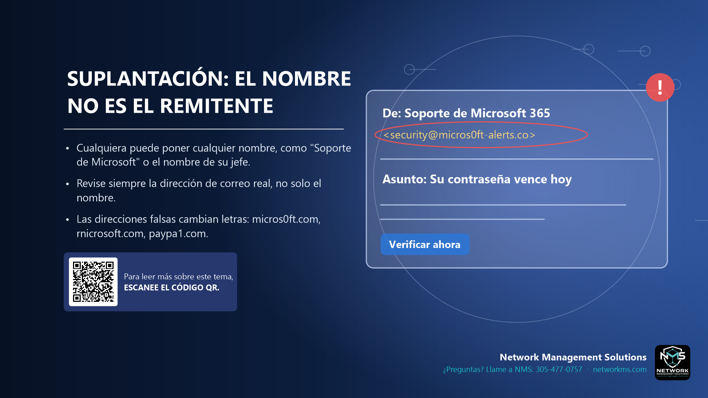

Suplantación: el nombre no es el remitente

- Cualquiera puede poner cualquier nombre, como "Soporte de Microsoft" o el nombre de su jefe.
- Revise siempre la dirección de correo real, no solo el nombre.
- Las direcciones falsas cambian letras: micros0ft.com, rnicrosoft.com, paypa1.com.
La suplantación (spoofing) es cuando un estafador hace que un mensaje parezca venir de otra persona. El truco más común es el nombre: el correo dice "Soporte de Microsoft 365" o el nombre de su jefe, pero la dirección real es un Gmail desconocido o un dominio falso.
Los dominios parecidos cambian un solo carácter para engañar a simple vista: un cero en vez de una O (micros0ft.com), "rn" en vez de "m" (rnicrosoft.com), un 1 en vez de una L (paypa1.com), o palabras de más (microsoft-alerts.co).
En el teléfono, toque el nombre del remitente para ver la dirección completa. En la computadora, pase el mouse por encima. Revise también la dirección de respuesta: si al responder cambia la dirección, es una estafa.
Los números de teléfono y los mensajes de texto también se pueden falsificar. Que la llamada diga el nombre de su banco no prueba que sea su banco.